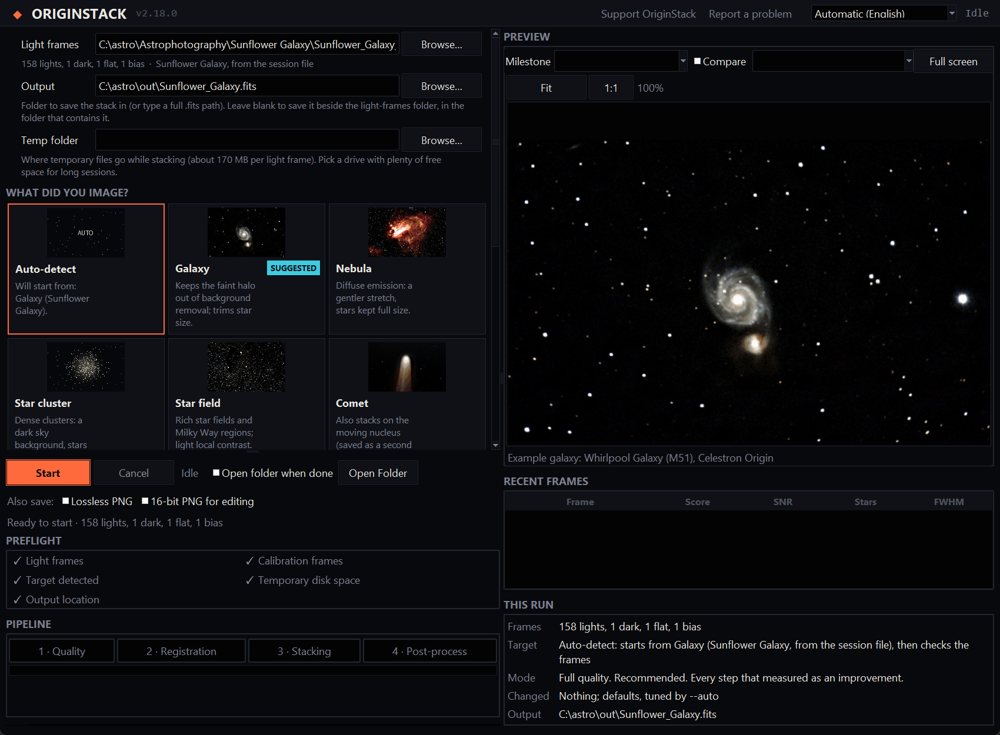
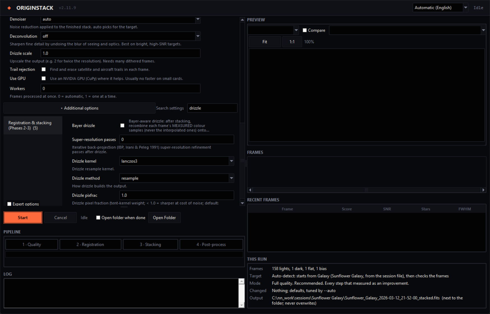
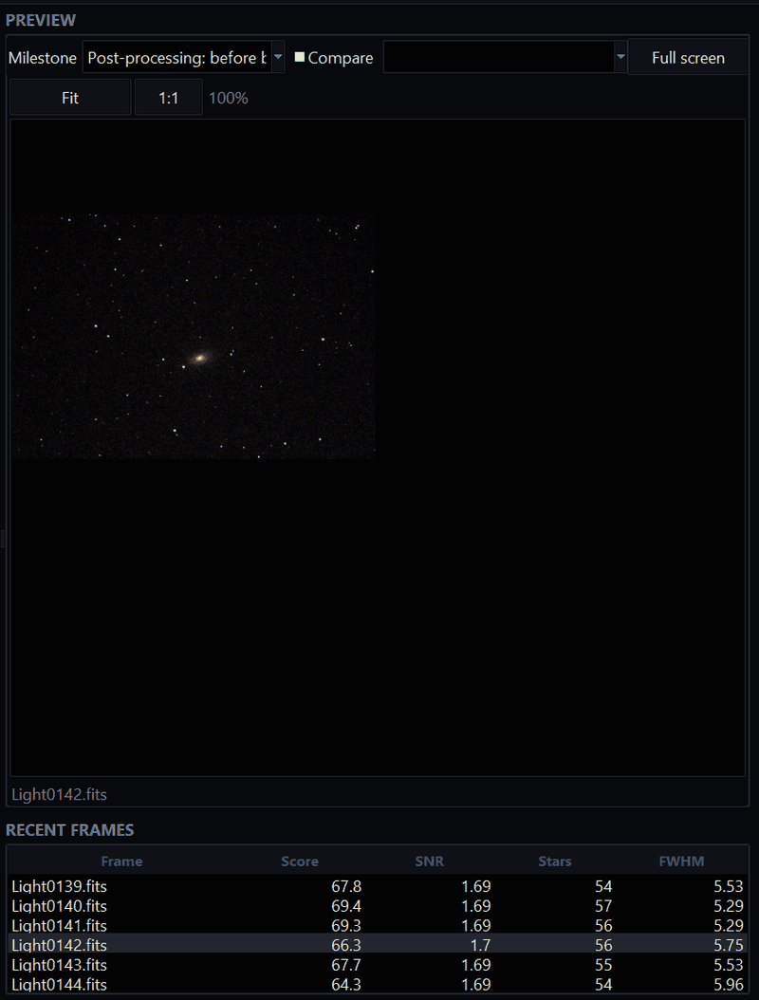

Install and open it
Download the installer for your system from the latest release; none of them needs Python or an account. The install section on the home page has the details for each system, including the extra approval macOS asks for on first launch.
- Language
top right The app follows your system language, in English, Dutch, French, German, Italian, Japanese, Brazilian Portuguese, Spanish or Simplified Chinese. The menu in the top-right corner changes it; restart the app for the change to take effect. The log stays in English so it can be shared when asking for help.
- Updates
When a newer release is out, the header says so. Nothing is downloaded or installed automatically.
Set up a run

- 1. Light frames
Choose the folder with your light frames. For a Celestron Origin, that is the session folder you copied from the telescope. The line underneath counts what it found (lights, darks, flats, bias frames) and names the target if it can tell, from the session file, the FITS header or the folder name. Calibration frames are found in the same folder; a separate calibration library can be set under Additional options (
--cal-dir).A folder of several session folders works too: the app stacks the nights together or separately, whichever keeps more of the picture, and finishes them as one image.
- 2. Output
optional A folder to save into, or a full
.fitspath. Leave it blank and the stack is saved beside the light-frames folder, named after the session. An earlier stack is never overwritten: a new name is chosen instead.- 3. Temp folder
optional Where temporary files go while stacking, about 170 MB per light frame. Leave it blank for the system's temp folder, or pick a drive with more free space for long sessions. The app remembers your choice, checks the space before it starts, and removes the files after every run, including one that failed or was cancelled.
- 4. What did you image?
Six cards: Auto-detect, Galaxy, Nebula, Star cluster, Star field and Comet. Each changes how the image is finished: a galaxy keeps its faint halo out of background removal and gets smaller stars, a nebula a gentler stretch, a comet a second stack aligned on the moving nucleus. Auto-detect starts from the suggested card and then checks the frames themselves. Before a run, the preview shows an example result for the card you picked.
- 5. How should it run?
Full quality runs every step that measured as an improvement. Quick look is a faster check: no outlier rejection and lighter processing, for seeing whether a session is worth a full run.
- 6. This run
The panel at the bottom right sums it up before you commit: the frames, the target and where the guess came from, the mode, every setting you changed, and the output file.
- Preflight
Before starting, the checklist confirms that light frames, calibration frames, a target and enough temporary disk space are available. A warning does not prevent a run, but it makes the trade-off visible first.
Settings, if you want them
You do not need to change anything: settings are tuned to the target and the frames automatically, and anything you set yourself wins over the tuning. Below the cards are the handful of settings that most change a result; Additional options opens the rest.

- The main settings
Stacking method, denoiser, deconvolution, drizzle scale, trail rejection, GPU and the number of workers. Every setting has a one-line description under it; hover for the full help.
- Additional options
search All the other options, grouped like the pipeline: frames and calibration, registration and stacking, post-processing, output and plate solving, multiple sessions, comet mode, diagnostics. Type in Search settings to find one by name or description. They are the same options as the command line.
- Expert options
A checkbox at the bottom of the groups shows the fine-tuning the automatic settings normally manage, the diagnostics, and features that are experimental or did not help on typical data in testing.
- What you changed
A changed setting is marked and gets a reset link back to its default, and the app counts changed settings that sit in a collapsed section, so nothing you altered stays out of sight. This run lists them all.
While it runs


- Pipeline and log
The four boxes light up as the run moves through quality, registration, stacking and post-processing, with a progress bar underneath. The log reports each step and how long it took; a warning or a rejected frame says why.
- Preview
Shows the stack as it develops. The drop-down lists every stage saved so far, such as the stack before and after each finishing step; tick Compare and pick a second stage to see the two side by side. Fit and 1:1 switch between the whole image and actual pixels.
- Frames
A table of the most recent frames with their quality score, signal-to-noise, star count and star width (FWHM), so a run of bad frames from cloud or wind is easy to spot. Click a row (or step through with the arrow keys) to see that frame in the preview; pick a stage from the drop-down to go back to the stack.
- Cancel
Stops the run at the next safe point and removes its temporary files. Closing the window during a run does the same.
- Keyboard shortcuts
Ctrl+Enter starts a run, Esc cancels, F fits the preview, 1 shows actual pixels and C toggles compare mode.
When it is done

- Complete
A summary of the run: frames stacked out of those found, average star width, the output file and the total time. Open Folder opens the output folder with the stack selected; tick Open folder when done to have it open automatically. Copy CLI command places an equivalent reproducible command on the clipboard.
- Diagnostics
Open the diagnostics panel after a run to see warnings, rejected-frame counts and errors without searching through the full log.
- Re-stretch the preview
StretchColourApply to JPEG A bar above the preview offers every display stretch and colour mode. Try them on the finished image and press Apply to JPEG to save the one you like over the run's JPEG. Nothing is re-processed and the FITS files do not change. The stretch gallery shows what each one does.
The files it writes
| File | What it is |
|---|---|
NAME.fits | The stack itself, linear and in 32-bit floating point, with the frame count and integration time in its header. Use it in other software, measure it, or merge it with another night later. |
NAME.jpg | The finished, stretched picture, ready to look at and share. |
NAME_config.toml | Every setting the run used, including those tuned automatically. Load it again with --config, or let --from-stack pick it up. |
Some options write more, such as a starless copy, a comet stack, an annotated JPEG or diagnostic reports; each is named after the stack and described with its option in the command-line reference.
Tips
- Disk space
Long sessions need room: about 170 MB of temporary space per light frame, so 300 frames need around 50 GB. The app checks before it starts and says how much it needs.
- Workers
Leave it at 0 (automatic): one single-threaded process on three of every four physical cores (frame processing is limited by memory speed, so more workers only compete for it). Set 1 to process one frame at a time on a machine that is short of memory.
- GPU
Off by default. On the cards tested it was no faster than the processor; it may help on a card with plenty of memory.
- When something goes wrong
The log says what happened. The Origin guide covers the common problems; for anything else, click Report a problem in the header. It opens a new GitHub issue in your browser with the version, your system, the error and the end of the log already filled in (your home folder shown as
~). Nothing is sent until you submit it there, and you can edit or remove anything first: the issue is public.